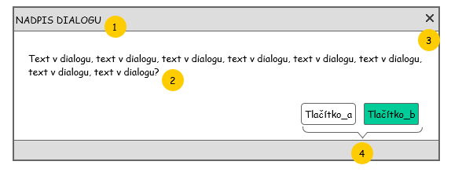

Přihlašovací obrazovka slouží pro zadání přihlašovacích údajů a přihlášení do aplikace. Na přihlašovací obrazovce může uživatel přepínat jazyk aplikace.

| Callout | Prvek | Typ komponenty | Viditelné | Zpřístupněno | Hodnota | Chování |
|---|---|---|---|---|---|---|
| 1 | Titulek dialogu | Label | Ano | Ne | Viz Systémové hlášky | - |
| 2 | Sdělení v dialogu | Label | Ano | Ne | Viz Systémové hlášky | - |
| 3 | Zavření dialogu | Tlačítko | Ano | Ano | - | Zavře dialog. V případě potvrzovacího dialogu odpovídá možnosti "Storno", stornuje potvrzovanou akci. |
| 4 | Tlačítka dialogu | Tlačítko | Ano | Ano | Viz Systémové hlášky | Implicitní dle významu jednotlivých tlačítek. Bližší chování popsáno v příslušném UC. |